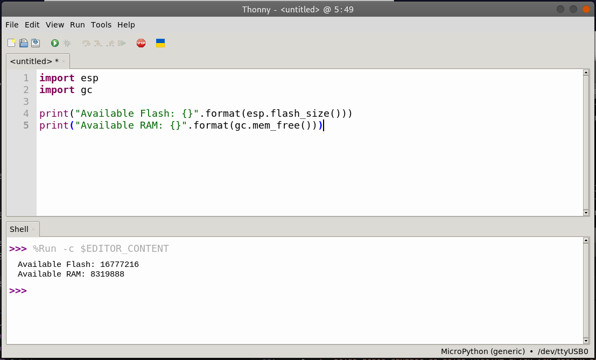

In a previous blog entry, I successfully flashed a pre-built micropython image on the ESP32S3 Devkit-C-v1.1 board. Unfortunately the official prebuilt ESP32-S3 images on the Micropython wesbite site, support up to 8MB of Flash only. The ESP32S3 Devkit-C-v1.1 board (ESP32-S3-DevKitC-1-N16R8V) that I have has 16MB of Flash available; half of which was not detected. In order to get Micropython to utilize the entirety of the available 16MB of Flash memory, I had to build a custom Micropython image (from source).
The task of building a custom Micropython image can be divided into the following steps:
- Download and Install the ESP-IDF environment and all the necessary prerequisites
- Download the Micropython source tree and install all the necessary prerequsites
- Add a new board variant (with 16MB flash + octal SPIRAM) to the ESP32_GENERIC_S3 board definitions folder in the Micropython source tree
- Build a custom Micropython image based on this new variant and flash it onto the board.
Download and Install the ESP-IDF environment and all prerequisites
The instructions for installing the ESP-IDF on a Linux based OS are provided here by Espressif. I will still go through all the steps below. Please bear in mind that the ESP-IDF SDK alone needs 1.8GB. The dev tools that it downloads (in a .espressif folder in the home directory) can easily eat up another 4.2GB!! Make sure you have enough hard drive space.
Start by installing all prerequisites. For Debian this looks like:
: $ sudo apt-get install git wget flex bison gperf python3 python3-pip python3-venv cmake ninja-build ccache libffi-dev libssl-dev dfu-util libusb-1.0-0
Then download and install the ESP-IDF; the Espressif’s C SDK for the ESP32 family.
: $ mkdir -p ~/Development/esp
: $ cd ~/Development/esp
: $ git clone -b v5.0.4 --recursive https://github.com/espressif/esp-idf.git
: $ cd ~/esp/esp-idf
: $ ./install.sh esp32s3
The last command (above) installs the tools (compiler, debugger e.t.c.) necessary for the esp32s3 only. If you’d like to install tools for both the ESP32 and the ESP32-C3 in addition to the ESP32-S3, replace that command with : ~$ ./install.sh esp32s3,esp32,esp32c3.
Also make sure that you download a version of the ESP-IDF that’s compatible with Micropython. In this tutorial version 5.0.4 of the ESP-IDF is used.
Once the ESP-IDF SDK is downloaded and installed, you’ll need to load the necessary environment variables to use it:
: $ . ~/Development/esp/esp-idf/export.sh
Download the Micropython source tree and install all prerequsites
First, download all the necessary prerequisites for a Debian machine:
: $ sudo apt-get install build-essential libreadline-dev libffi-dev git pkg-config gcc-arm-none-eabi libnewlib-arm-none-eabi
Next, download the micropython source code into the ~/Development directory.
: $ cd ~/Development
: $ git clone --recurse-submodules https://github.com/micropython/micropython.git
Build the MicroPython cross-compiler mpy-cross. It’s needed to pre-compile some of the built-in scripts to bytecode.
: $ cd ~/Development/micropython/
: $ make -C mpy-cross
Add a new board variant (with 16MB flash + octal SPIRAM) for the ESP32-S3
In the Micropython source tree, go to where the ESP32 boards are, and cd into the ESP32_GENERIC_S3 board definition folder.
: $ cd ~/Development/micropython/ports/esp32/boards/ESP32_GENERIC_S3
: $ ls -al
You’ll find the following files:
- board.json
- board.md
- mpconfigboard.cmake
- mpconfigboard.h
- sdkconfig.board
- sdkconfig.flash_4m
Let’s take a look at board.json:
{
"deploy": [
"../deploy_s3.md"
],
"docs": "",
"features": [
"BLE",
"External Flash",
"External RAM",
"WiFi"
],
"images": [
"generic_s3.jpg"
],
"mcu": "esp32s3",
"product": "ESP32-S3",
"thumbnail": "",
"url": "https://www.espressif.com/en/products/modules",
"vendor": "Espressif",
"variants": {
"SPIRAM_OCT": "Support for Octal-SPIRAM",
"FLASH_4M": "4MiB flash"
}
}
In the variants structure at the bottom, add a new variant FLASH_16M_SPIRAM_OCT.
The modified board.json should now look like:
{
"deploy": [
"../deploy_s3.md"
],
"docs": "",
"features": [
"BLE",
"External Flash",
"External RAM",
"WiFi"
],
"images": [
"generic_s3.jpg"
],
"mcu": "esp32s3",
"product": "ESP32-S3",
"thumbnail": "",
"url": "https://www.espressif.com/en/products/modules",
"vendor": "Espressif",
"variants": {
"SPIRAM_OCT": "Support for Octal-SPIRAM",
"FLASH_4M": "4MiB flash",
"FLASH_16M_SPIRAM_OCT": "16MiB flash with Octal-SPIRAM"
}
}
The next file that needs to be modified is the mpconfigboard.cmake. This is what it looks like before modification:
set(IDF_TARGET esp32s3)
set(SDKCONFIG_DEFAULTS
boards/sdkconfig.base
${SDKCONFIG_IDF_VERSION_SPECIFIC}
boards/sdkconfig.usb
boards/sdkconfig.ble
boards/sdkconfig.spiram_sx
boards/ESP32_GENERIC_S3/sdkconfig.board
)
if(MICROPY_BOARD_VARIANT STREQUAL "SPIRAM_OCT")
set(SDKCONFIG_DEFAULTS
${SDKCONFIG_DEFAULTS}
boards/sdkconfig.240mhz
boards/sdkconfig.spiram_oct
)
list(APPEND MICROPY_DEF_BOARD
MICROPY_HW_BOARD_NAME="Generic ESP32S3 module with Octal-SPIRAM"
)
endif()
if(MICROPY_BOARD_VARIANT STREQUAL "FLASH_4M")
set(SDKCONFIG_DEFAULTS
${SDKCONFIG_DEFAULTS}
boards/ESP32_GENERIC_S3/sdkconfig.flash_4m
)
endif()
Add a new if block at the bottom of the file for our new variant. The modified mpconfigboard.cmake should look like:
set(IDF_TARGET esp32s3)
set(SDKCONFIG_DEFAULTS
boards/sdkconfig.base
${SDKCONFIG_IDF_VERSION_SPECIFIC}
boards/sdkconfig.usb
boards/sdkconfig.ble
boards/sdkconfig.spiram_sx
boards/ESP32_GENERIC_S3/sdkconfig.board
)
if(MICROPY_BOARD_VARIANT STREQUAL "SPIRAM_OCT")
set(SDKCONFIG_DEFAULTS
${SDKCONFIG_DEFAULTS}
boards/sdkconfig.240mhz
boards/sdkconfig.spiram_oct
)
list(APPEND MICROPY_DEF_BOARD
MICROPY_HW_BOARD_NAME="Generic ESP32S3 module with Octal-SPIRAM"
)
endif()
if(MICROPY_BOARD_VARIANT STREQUAL "FLASH_4M")
set(SDKCONFIG_DEFAULTS
${SDKCONFIG_DEFAULTS}
boards/ESP32_GENERIC_S3/sdkconfig.flash_4m
)
endif()
if(MICROPY_BOARD_VARIANT STREQUAL "FLASH_16M_SPIRAM_OCT")
set(SDKCONFIG_DEFAULTS
${SDKCONFIG_DEFAULTS}
boards/sdkconfig.240mhz
boards/sdkconfig.spiram_oct
boards/ESP32_GENERIC_S3/sdkconfig.flash_16m
)
list(APPEND MICROPY_DEF_BOARD
MICROPY_HW_BOARD_NAME="ESP32S3 microcontroller with 16MB of Flash & Octal-SPIRAM"
)
endif()
Note that the list section in the last if block, defines the name of the board. Ideally you can place whatever you like here. It will override the board name definition in the mpconfigboard.h file and will be printed in the Micropython shell when
the board is brought out of reset.
Now let’s take a quick peek at sdkconfig.flash_4m:
CONFIG_ESPTOOLPY_FLASHSIZE_4MB=y
CONFIG_ESPTOOLPY_FLASHSIZE_8MB=
CONFIG_PARTITION_TABLE_CUSTOM_FILENAME="partitions-4MiB.csv"
DO NOT MODIFY this file. Instead create a new file called sdkconfig.flash_16m. This file was already referenced in the modification made to the mpconfigboard.cmake. The contents of the new sdkconfig.flash_16m should be:
CONFIG_ESPTOOLPY_FLASHSIZE_4MB=
CONFIG_ESPTOOLPY_FLASHSIZE_8MB=
CONFIG_ESPTOOLPY_FLASHSIZE_16MB=y
CONFIG_PARTITION_TABLE_CUSTOM_FILENAME="partitions-16MiB.csv"
Note that the contents of the sdkconfig.flash_16m file are remarkably similar to those of the sdkconfig.flash_4m. The differences include setting the esptool FLASHSIZE variable to 16MB, and including the 16MiB partition memory file instead of the 4MiB one. The partition files theselves are already included in the Micropython source tree at micropython/ports/esp32/.
With these modifications completed, we are now ready to build the image!
Build a custom Micropython image based on this new variant
To build the new micropython image; first load the esp-idf’s environment variables then cd into micropython/ports/esp32 and type the make submodules & make commands as shown below.
: $ . ~/Development/esp/esp-idf/export.sh
: $ cd ~/Development/micropython/ports/esp32
: $ make submodules
: $ make BOARD=ESP32_GENERIC_S3 BOARD_VARIANT=FLASH_16M_SPIRAM_OCT
The new custom micropython image files should be available at ~/Development/micropython/ports/esp32/build-ESP32_GENERIC_S3-FLASH_16M_SPIRAM_OCT/.
to flash our Micropython image onto our ESP32-S3 Devkit microcontroller:
: $ esptool.py --chip esp32s3 --port /dev/ttyUSB0 erase_flash
: $ esptool.py -p /dev/ttyUSB0 -b 460800 --before default_reset --after no_reset --chip esp32s3 write_flash --flash_mode dio --flash_size 16MB --flash_freq 80m 0x0 build-ESP32_GENERIC_S3-FLASH_16M_SPIRAM_OCT/bootloader/bootloader.bin 0x8000 build-ESP32_GENERIC_S3-FLASH_16M_SPIRAM_OCT/partition_table/partition-table.bin 0x10000 build-ESP32_GENERIC_S3-FLASH_16M_SPIRAM_OCT/micropython.bin
The esptool command for flashing the ESP32S3 module with the custom image can be rather long. Thankfully, after the previous make command succeeds in building the image, it prints out the full flash command for you.
The build process also generates a single binary firmware.bin that combines bootloader.bin, partition-table.bin and micropython.bin listed above. For a shorter flash command you can try:
: $ esptool.py --chip esp32s3 --port /dev/ttyUSB0 erase_flash
: $ esptool.py -p /dev/ttyUSB0 -b 460800 --before default_reset --after no_reset --chip esp32s3 write_flash --flash_mode dio --flash_size 16MB --flash_freq 80m 0x0 build-ESP32_GENERIC_S3-FLASH_16M_SPIRAM_OCT/firmware.bin
or this for further brevity:
: $ esptool.py --chip esp32s3 --port /dev/ttyUSB0 erase_flash
: $ esptool.py --chip esp32s3 --port /dev/ttyUSB0 write_flash -z 0 build-ESP32_GENERIC_S3-FLASH_16M_SPIRAM_OCT/firmware.bin
Because the esp-idf’s environment variables were loaded with the export.sh command, the terminal should have access to the esptool programmer via the esp-idf SDK without resorting to the use of the Python virtual environment created in the previous blog entry.
After resetting the board and opening Thonny, we are greeted with the Micropython Shell shown below:
The Micropython shell prints out the board name that we placed in the mpconfigboard.cmake file for the 16MB with SPI octal ram variant: ESP32S3 microcontroller with 16MB of Flash & Octal-SPIRAM.
Now let’s run the following Micropython script to determine how much Flash and RAM is detected:
import esp
import gc
print("Available Flash: {}".format(esp.flash_size()))
print("Available RAM: {}".format(gc.mem_free()))

The output is provided in the figure above. It seems that our custom Micropython build is now able to take advantage of all 16MB of available Flash memory! Success!